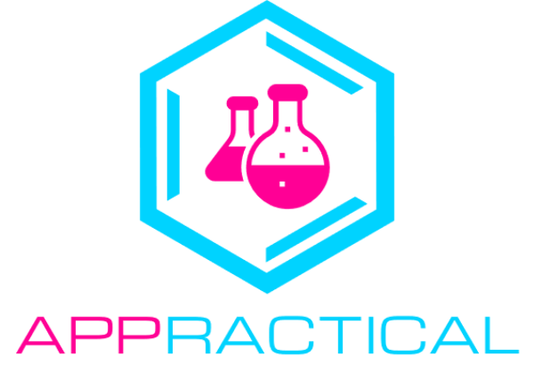

DEMOCRATISING ACCESS TO SCIENCE FACILITIES
Science education is very important to any economy. South Africa and Africa in general perform badly in this
subject. One of the key reasons to this poor performance is the lack of access to science facilities.
In South Africa,
86% of public ordinary schools do not have science labs according the Institute of Race Relations (Fin24,2017).
In South Africa the best performing provinces are the ones that have more science laboratories (Western Cape, Gauteng and Free State
have laboratories in a third of their schools) and the worst provinces (Eastern Cape and Limpopo, only 6% of schools have labs).
The lack of science facilities continues to haunt students even when they get to tertiary. I can testify - from exprience - to the difficulty faced by students who come from
schools that did not have science laboratories (and thus not exposed to experimentation) when it comes to practicals at
tertiary. The lack of farmiliarity means students take longer to finish practicals, or not finish at all. This negatively affects the academic
perfomance and confidence of students.
APPractical addresses the problem access by allowing students to conduct science, albeit in a virtual environment. The virtual experimatation has added benefits over traditional laboratories when it comes to safety, which means students are free to explore with the normal lab hazards. Since the susbtances are virtual, this means that they are not consumable and students can try perform the experiments as many times as they need to.